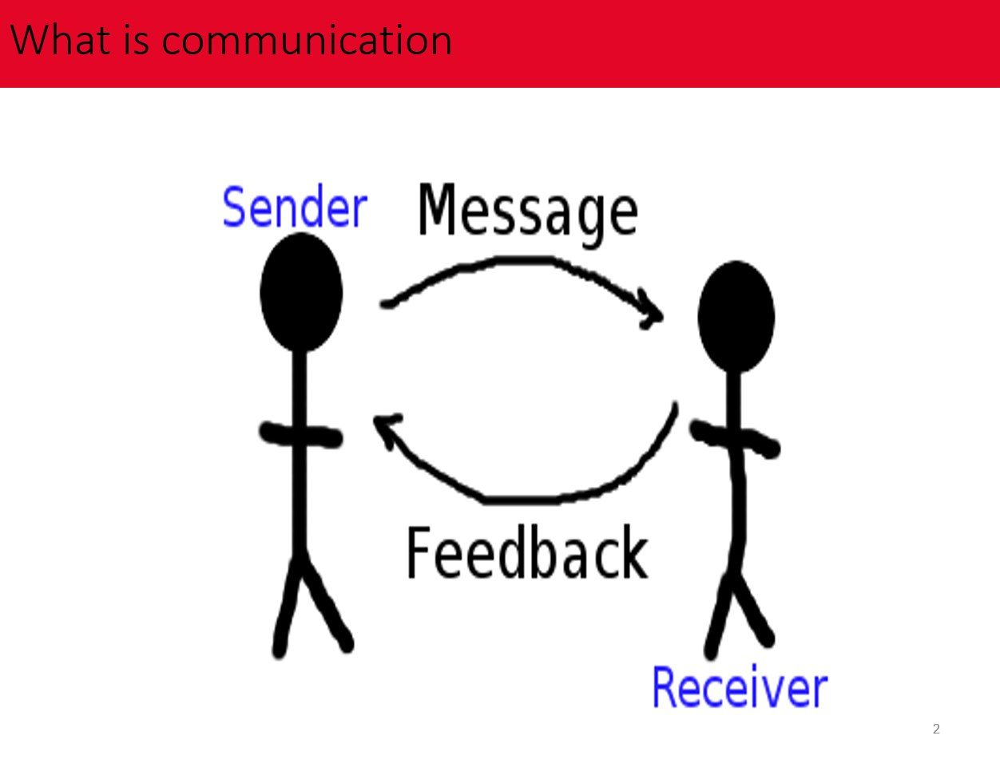
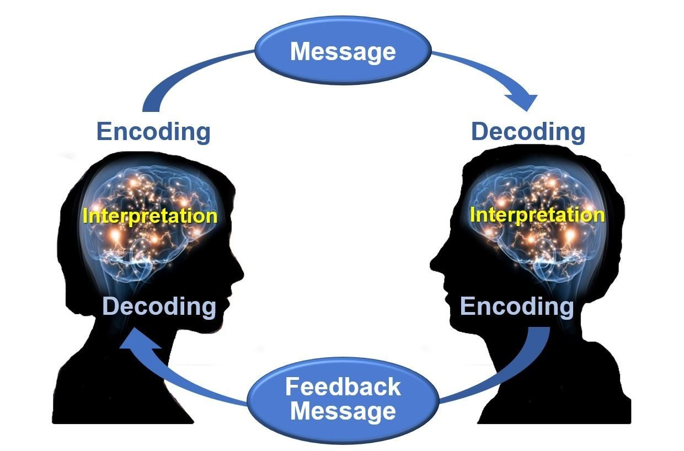
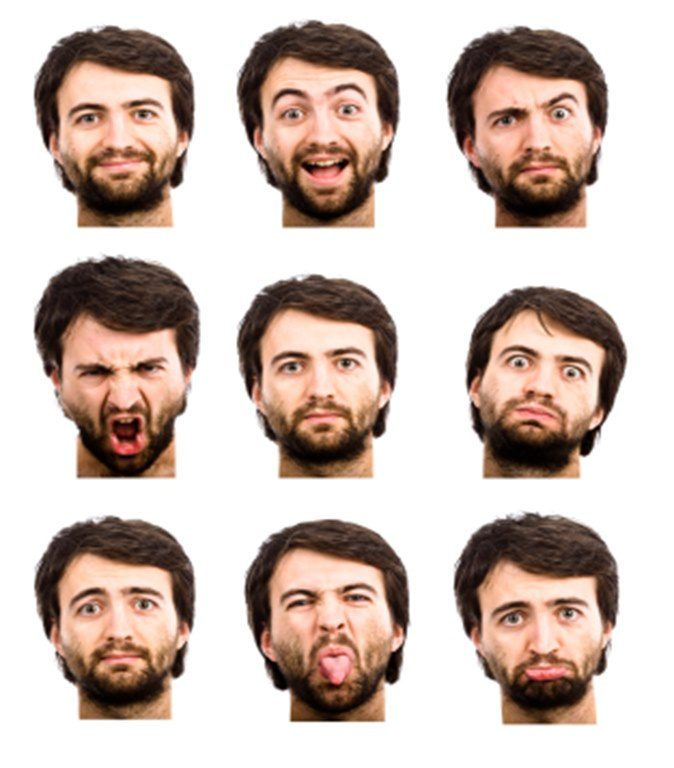
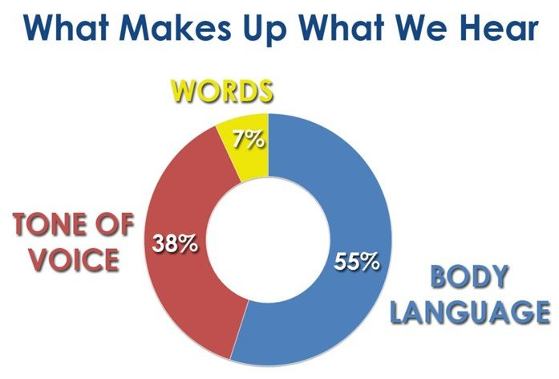
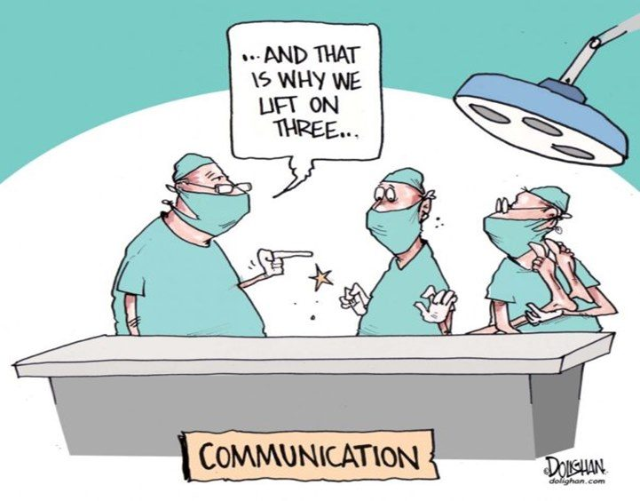
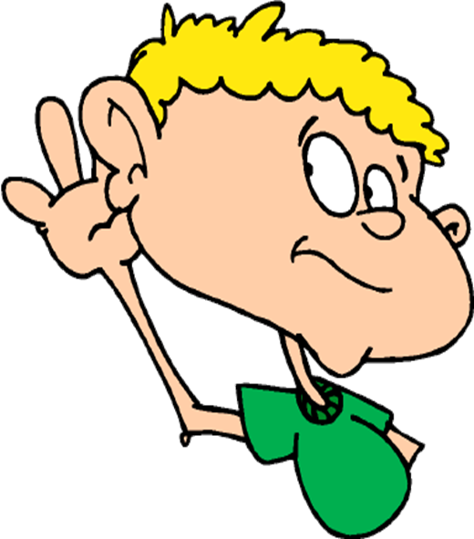
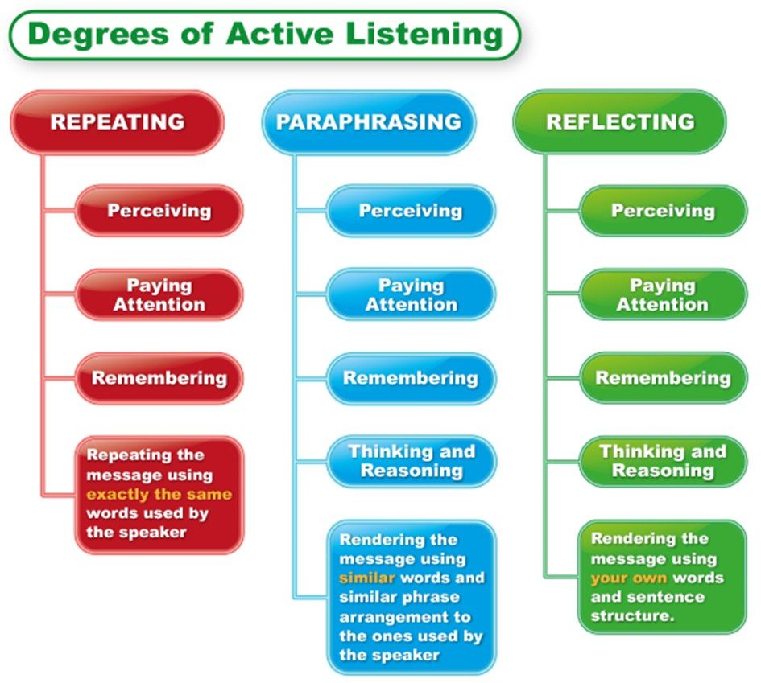
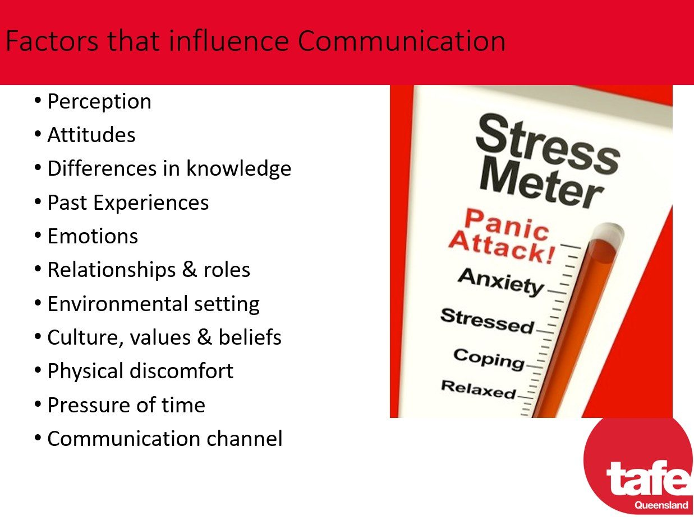
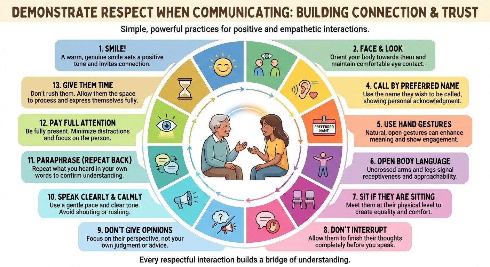
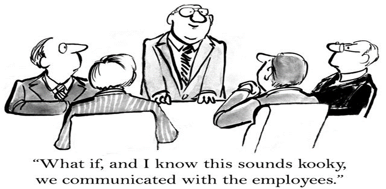

CHCCOM005 CHCDIV001 Consumer-Directed Care Cluster · Lesson 2
How we communicate
How a message travels, the four ways we communicate, body language, listening, respect, and what gets in the way.
Every shift is full of communication: with the people you support, their families and your team. In this lesson you learn how a message travels, the four ways we communicate, and the skills that make people feel heard and respected.
1 How a message travels **
All communication is a two-way process. A message goes from one person to another, and back again.
- NP5 S1 P1Sender: the person who gives the message.
- NP5 S1 P2Message: the information you want to share. It can be spoken, written, or shown with your body.
- NP5 S1 P3Receiver: the person who gets the message.
- NP5 S1 P4Feedback: the receiver shows or tells the sender that they understood. Without feedback, you do not know if the message arrived the way you meant it.
- NP5 S1 P5Everything we do sends a message, even when we say nothing.


2 Four ways we communicate **
There are four modes (ways) of communication. Your assessment matches each mode to its examples. The examples below use the same words as your assessment.
- NP5 S2 P1Non-verbal communication: Body language, gestures, and how we dress and act. (Talking without words.)
- NP5 S2 P2Written communication: Letters, emails, books and magazines. (Also progress notes, incident forms and procedure manuals at work.)
- NP5 S2 P3Verbal communication: Face-to-face, telephone, radio and television. (Talking and listening with words.)
- NP5 S2 P4Visualisation: Graphs, charts, maps and logos. (Pictures that show information.)
- NP5 S2 P5Verbal communication is more than the words. It is also how we say them (tone and pitch), the speed and volume, and what the listener sees while we talk.
Match each mode to its examples.
3 Body language: talking without words **
Often the most important part of a message is non-verbal: we see it before we hear it.
- NP5 S3 P1The four non-verbal methods in your assessment: Facial expressions, Posture, Gestures, Tone of voice.
- NP5 S3 P2Facial expressions: a smile, a frown, raised eyebrows. Your face shows your feelings.
- NP5 S3 P3Posture: how you sit or stand. Open and relaxed, or closed with crossed arms.
- NP5 S3 P4Gestures: hand and arm movements, a nod, a wave, a thumbs up. Some gestures mean different things in different cultures.
- NP5 S3 P5Tone of voice: warm or cold, calm or angry. How you say it can change the meaning of the words.
- NP5 S3 P6Other non-verbal signals: eye contact, touch, personal space, and how you dress.
- NP5 S3 P7Not non-verbal: Colour of your eyes, Using slang, Using industry terminology, Phrasing of sentences. Slang, terminology and phrasing are about words.


Watch: Body language, the power is in the palm of your hands (Allan Pease, TEDx Macquarie University)
These are the options from your assessment. Tap each one, then tap where it belongs.
4 Effective communication **
Effective communication means the person gets the message you meant, and you get theirs.
- NP5 S4 P1The four things in your assessment that are useful for effective communication: Pronouncing words and using terminology correctly, Open body language, Active listening, Confirming understanding.
- NP5 S4 P2Not useful: Passive communication, Asking closed questions, Limited interaction with audience, Not showing emotions.
- NP5 S4 P3More good habits: ask open questions; pay attention; avoid slang and jargon; be open-minded and non-judgemental; learn some common words in the person's language; talk in a quiet, private place; do not give too much information at once.
- NP5 S4 P4Why do correct grammar, speed and pronunciation matter, especially with people from other cultures? So that the person receives the message you meant, and there is less risk of misunderstanding.
- NP5 S4 P5In the practical skills day your teacher listens for: respect and inclusion, open questions, correct grammar, speed and pronunciation (a calm, moderate voice), trust (open-minded, no judging), facing the person with eye contact, and being clear (simple words, no slang).

These are the options from your assessment. Tap each one, then tap Useful or Not useful.
5 Conversation techniques **
Nine techniques, with the same examples and meanings as your assessment. Some help a conversation. Some damage it.
- NP5 S5 P1Closed Question: Did you enjoy lunch? (The answer is yes or no.)
- NP5 S5 P2Open Question: What would you like to do today? (The person can give a long answer. Open questions often start with what, how, tell me.)
- NP5 S5 P3Affirmation: This is a beautiful painting. You are a talented artist. (Saying something positive and true about the person.)
- NP5 S5 P4Reflective Listening: Seeking to understand the speaker focussing on the essential parts of what has been communicated. (You repeat back the main point in your own words. Example: "You are worried you cannot live the way you want.")
- NP5 S5 P5Summarise: Give a brief statement of the main points. (Usually near the end of a talk.)
- NP5 S5 P6Motivational Interviewing: Use various techniques to create a conversation around change without suggesting to the person that they should change.
- NP5 S5 P7Coercive approach: Forcing another person to do something they do not want to do. (Never acceptable.)
- NP5 S5 P8Collaboration: Working together to complete tasks or achieve a goal.
- NP5 S5 P9Confrontation: Betty, I need to talk to you NOW. (Aggressive. It makes people defensive.)
- NP5 S5 P10Small encouragers keep a person talking: a nod, a smile, "Uh-huh", "I hear what you are saying", "Tell me more".
Match each technique to its example or definition.
6 Active listening **
Active listening means you focus fully on the person so you understand them. Then you can say back, in your own words, what they told you. It does not mean you have to agree.
- NP5 S6 P1Stay alert, and give the person your full attention. Put your phone away.
- NP5 S6 P2Focus on the person's ideas and feelings, not on what you will say next.
- NP5 S6 P3Do not interrupt.
- NP5 S6 P4Watch the person's body language too.
- NP5 S6 P5Ask when you are not sure: "Do you mean...?"
- NP5 S6 P6Paraphrase: say back the main point in your own words, and check: "Have I got that right?"


Watch: 5 ways to listen better (Julian Treasure, TED)
7 Seven things that change how people communicate **
Your assessment gives you seven factors. For each one, give one example of how it can change communication.
- NP5 S7 P1Language: the person may hear your words but not understand them. Slang and jargon can confuse. A strong accent can be hard to understand. Misunderstandings happen easily.
- NP5 S7 P2Culture: a person's background and past experiences shape how they talk and act. Some gestures or body language can be rude. People may react to how you speak, not what you say. There may be rules about who in the family must be included.
- NP5 S7 P3Religion: people may judge others by their religious dress or symbols. Beliefs can lead to different opinions. Some religions have rules to follow when you talk or touch.
- NP5 S7 P4Emotional state: anger, fear or worry change how a person talks and listens. They may not tell you how they really feel. An upset person finds it hard to concentrate or take in information. You need to read their emotions.
- NP5 S7 P5Disability: a hearing or vision loss; trouble speaking clearly; trouble taking in information and answering. The person may need a communication aid. Sit at the same eye level.
- NP5 S7 P6Health: a person who is sick or in pain may not want to talk, or may not answer as usual. They may feel less confident, or need someone to speak for them.
- NP5 S7 P7Age: communication can change as we get older. A person may speak more slowly. Hearing and eyesight get weaker. More health problems can affect communication. Change your style to suit the person's age.

8 How culture shapes communication **
A person's culture can change the whole communication process. Your assessment asks for four examples. Choose different ones, not four about language.
- NP5 S8 P1The language used: the words and expressions people use, and what they mean.
- NP5 S8 P2Needing an interpreter: when you do not share a language, a professional interpreter helps you understand each other.
- NP5 S8 P3Who must be there: in some cultures, important talks must include the family, an elder or a community member.
- NP5 S8 P4Gender roles: who speaks, who decides, and whether a man or a woman should give care.
- NP5 S8 P5Cultural views on gender roles: what men and women are expected to do in the family and community.
- NP5 S8 P6Body language: eye contact, touch, gestures and personal space can be polite in one culture and rude in another.
- NP5 S8 P7Avoiding shame: in some cultures it is very important not to embarrass a person in front of others, so you talk privately and gently.
- NP5 S8 P8Religious or cultural practices: prayer times, holy days, fasting or ceremonies can change when and how you talk.
9 Showing respect when you communicate **
Respect is not only kind words. Respect is how you behave when you talk with the person, their family and your colleagues. Give three examples in your assessment.
- NP5 S9 P1Face the person and look at them (if this is polite in their culture).
- NP5 S9 P2Listen with full attention, and do not interrupt.
- NP5 S9 P3Use the person's preferred name.
- NP5 S9 P4Keep your body language open, and use friendly gestures.
- NP5 S9 P5Be at the same level: sit down if the person is sitting.
- NP5 S9 P6Do not give your own opinions on their choices.
- NP5 S9 P7Speak clearly and calmly.
- NP5 S9 P8Paraphrase to show you understood.
- NP5 S9 P9Smile, and give the person the time they need.

10 Barriers, and how to get past them **
A barrier is anything that stops the message getting through. For your assessment, name four barriers and give two strategies for each one.
- NP5 S10 P1Jargon (work words people do not know) → use simple words; explain any work word you must use.
- NP5 S10 P2Not paying attention → stop what you are doing; listen and watch the person.
- NP5 S10 P3Different values and views → be open-minded; do not judge.
- NP5 S10 P4Hearing or vision loss (sensory impairment) → check aids are in and working; face the person, speak clearly, use pictures or writing.
- NP5 S10 P5Not speaking the same language → book an interpreter; learn a few common words in the person's language; use pictures and gestures.
- NP5 S10 P6Stereotypes and assumptions → treat each person as an individual; ask, do not assume.
- NP5 S10 P7Cultural differences → learn about the person's culture; ask what is respectful for them.
- NP5 S10 P8Distractions and no privacy → go to a quiet, private place; turn off the TV.
- NP5 S10 P9No feedback → ask questions to check understanding; give helpful feedback.
- NP5 S10 P10Too much information → give one step at a time; keep it short and simple.
- NP5 S10 P11Difficult situations, language barriers and misunderstandings: spot them early and fix them with a strategy, for example an interpreter or a picture board.

Match each barrier to a strategy that helps.
11 When communication breaks down **
Sometimes a conversation goes wrong: someone is upset, confused or angry. What you do next matters.
- NP5 S11 P1The four good ways to respond, as in your assessment: Remain professional, Active listening, Be respectful, Address the situation immediately.
- NP5 S11 P2Not good ways: Tell the person they are wrong, Ignore the person until the situation is resolved, Using a closed-ended question, Walk away.
- NP5 S11 P3Stay calm. Keep your voice low and slow. Listen to what the person needs.
- NP5 S11 P4Fix it now. Problems that are left alone usually get bigger.
These are the options from your assessment. Tap each one, then tap Good or Not good.